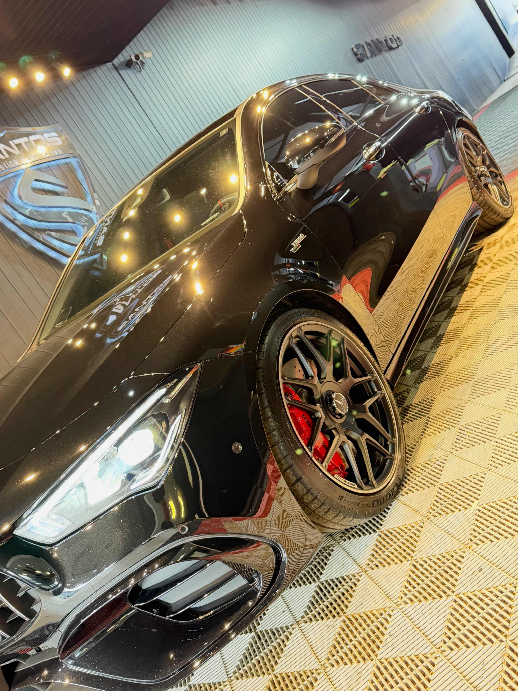
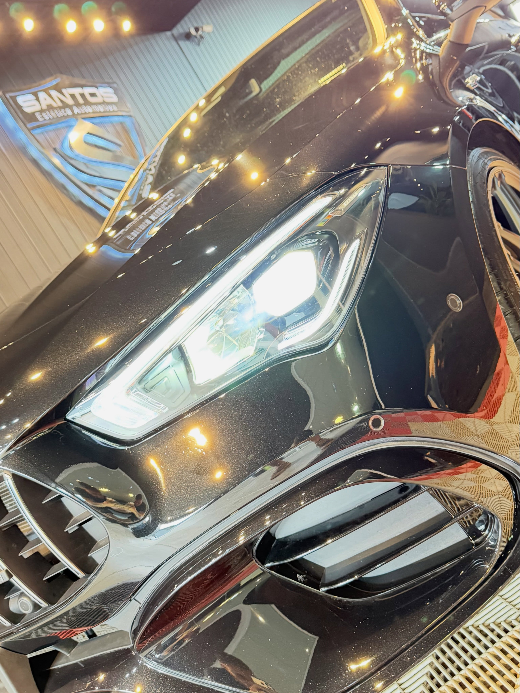
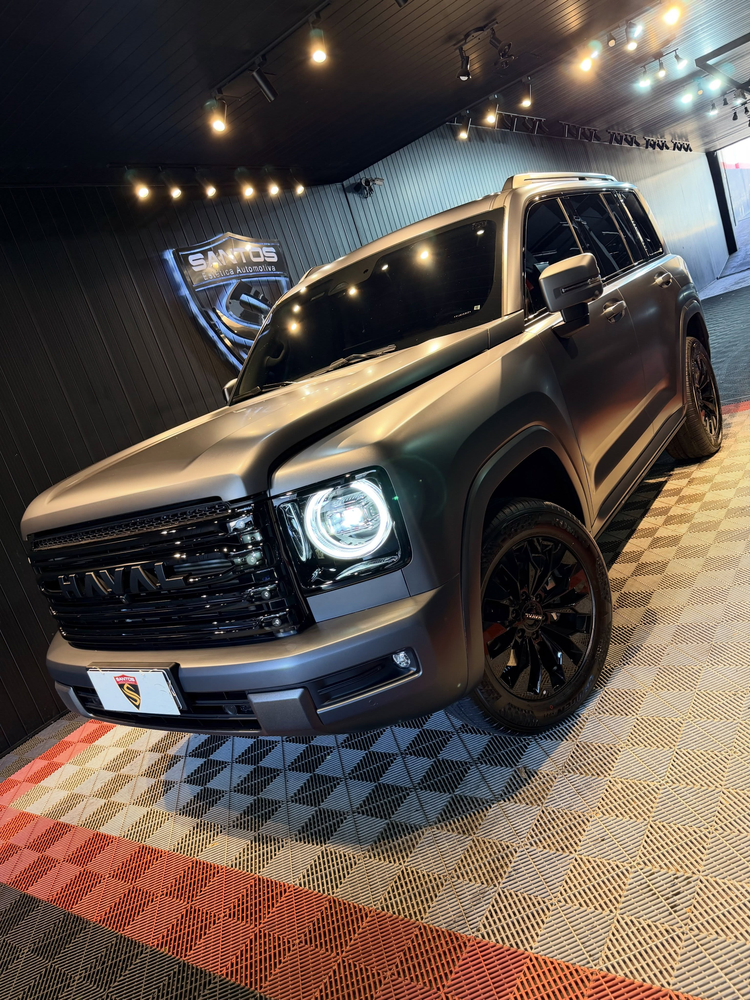
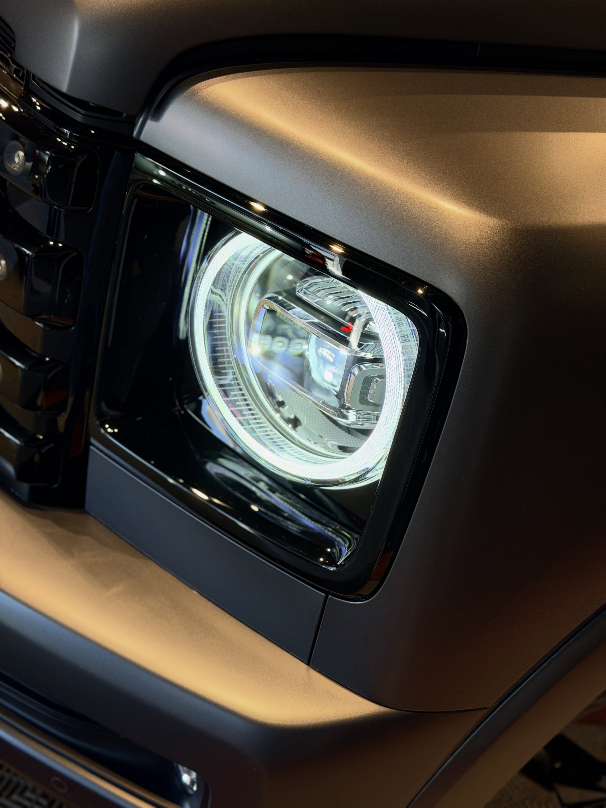
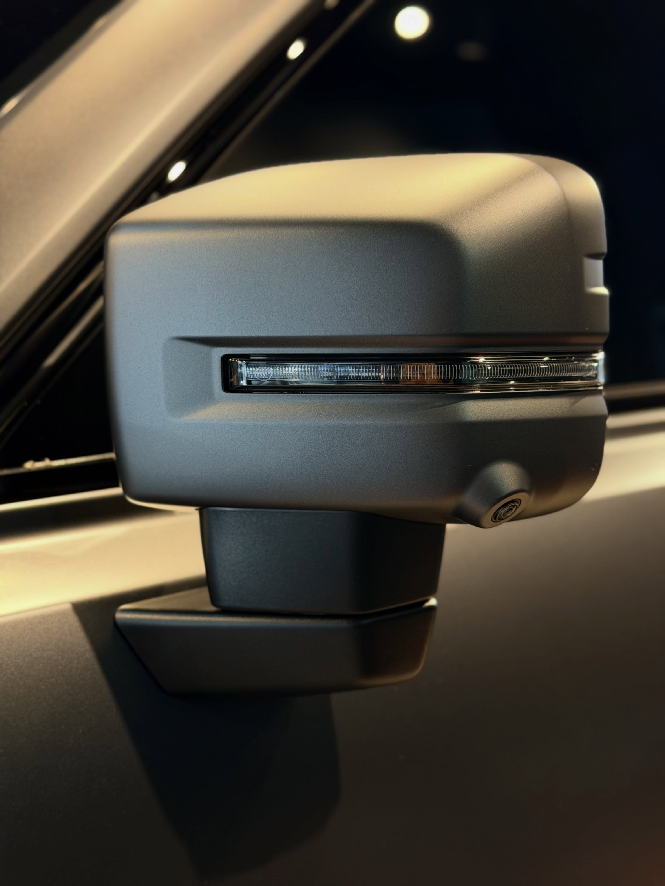
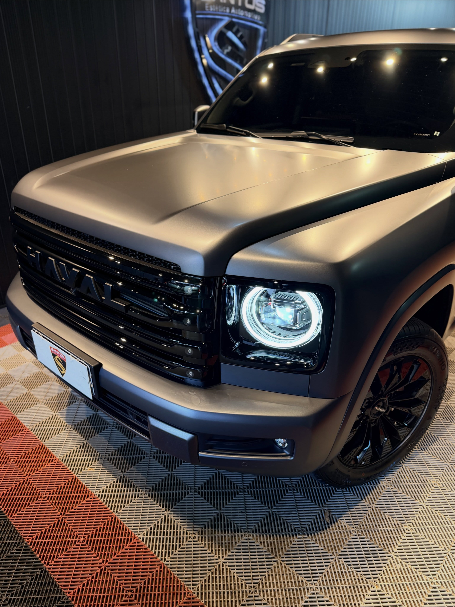

01
PPF frontal
Capô, para-choque dianteiro, para-lamas, retrovisores e faróis — a parte do carro que come estrada e concentra praticamente todo o dano por impacto. É a escolha mais comum e a de melhor custo-benefício.
Mais procuradoUma segunda pele sobre a pintura original. O PPF recebe o impacto que chegaria ao verniz — pedrisco de estrada, inseto, galho, o risco da lavagem malfeita — sem mudar a cor nem o brilho do carro.
Proteção de pintura
PPF é a sigla de Paint Protection Film: uma película de poliuretano transparente aplicada sobre a pintura original do carro. É a proteção mais robusta que existe para o verniz — e a única que cria uma barreira física de verdade contra impacto.
O acabamento é invisível. Cor, brilho e textura seguem os de fábrica; o que muda é que o dano para na película, não na pintura. Riscos leves somem sozinhos com o calor, porque o filme é autorregenerativo.
Como aplicamos
O recorte é ajustado peça a peça. Você escolhe até onde vai a proteção.
Capô, para-choque dianteiro, para-lamas, retrovisores e faróis — a parte do carro que come estrada e concentra praticamente todo o dano por impacto. É a escolha mais comum e a de melhor custo-benefício.
Mais procuradoO carro inteiro sob filme, incluindo as laterais, portas, teto e traseira. Proteção total da pintura, indicada para veículos de coleção, esportivos e carros que o dono pretende manter impecáveis por anos.
Proteção totalPara quem já tem película aplicada. Fazemos a manutenção do filme, a limpeza técnica das bordas e a avaliação do estado da aplicação, para que a proteção siga cumprindo o papel dela.
Filme já aplicadoPasso a passo
PPF assenta sobre pintura corrigida. Por isso o processo começa antes do filme.
Leitura da pintura sob iluminação técnica para identificar riscos, oxidação e reparos anteriores. É aqui que definimos se o carro precisa de correção antes do filme.
Lavagem, descontaminação e, quando necessário, polimento técnico. O filme sela o que está embaixo dele — então o que está embaixo precisa estar certo.
Recorte ajustado a cada peça e aplicação com o filme moldado à superfície, cuidando de bordas e curvas para que a película fique imperceptível.
Tempo de cura respeitado, revisão final peça por peça e orientação de cuidados. O carro sai com a proteção estabilizada e você sabe como mantê-la.
Galeria PPF
Clique em qualquer foto para ampliar.










Bora?
Manda o modelo do carro e a gente define junto se o caso é frontal ou completo — e o que precisa ser feito antes do filme.
Chamar no WhatsApp